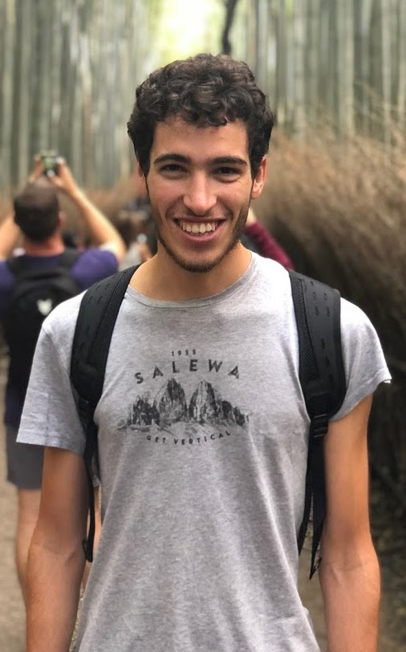

Email: dreda at cs dot ubc dot ca
|
I am a PhD student at University of British Columbia exploring applications of reinforcement learning to robotics, character animation, motions and autonomous driving with professor Michiel Van de Panne. Before, I was a reinforcement learning researcher at Wayve, applying machine learning to robotics control to teach cars how to drive themselves. I completed my B.Sc. at Polytechnic University of Turin and my M.Sc jointly between Polytechnic University of Turin and Telecom ParisTech - Eurecom Research Center, in Sophia Antipolis. I was a visiting researcher at Berkeley AI Research at UC Berkeley where I did research for my master thesis related to graphical models and statistical learning with professor Ruzena Bajcsy. When I am not in front of a screen, I am usually outdoors trying to split myself between rock climbing, mountaineering, trail running, and cycling. I am part of both the UBC Cycling Club and the BC Randonneurs Cycling Club. Sometimes (rarely) I write about random stuff over here. CV | Google Scholar | Github | Linkedin | Twitter |
 |
Tianxin Tao*, Daniele Reda*, Michiel van de Panne
(* indicates equal contribution)
Currently under review.
arXiv
Adam Scibior, Vasileios Lioutas, Daniele Reda, Peyman Bateni, Frank Wood
24th International Conference on Intelligent Transportation (ITSC), 2021
(Also BEST PAPER AWARD at CVPR Workshop on Autonomous Driving: Perception, Prediction and Planning, ADP3, 2021)
arXiv |
video
Daniele Reda*, Tianxin Tao*, Michiel van de Panne
(* indicates equal contribution)
The 13th Annual ACM SIGGRAPH Conference on Motion, Interaction and Games (MIG), 2020
arXiv |
project page |
video
Jeffrey Hawke* Richard Shen*, Corina Gurau*, Siddharth Sharma*, Daniele Reda*, Nikolay Nikolov*, Przemyslaw Mazur*, Sean Micklethwaite*, Nicolas Griffiths*, Amar Shah*, Alex Kendall*
(* indicates equal contribution)
International Conference on Robotics and Automation (ICRA), 2020
(Also at ML for Autonomous Driving Workshop at NeurIPS, 2019)
arXiv |
blog post |
video
Alex Kendall, Jeffrey Hawke, David Janz, Przemyslaw Mazur, Daniele Reda, John-Mark Allen, Vinh-Dieu Lam, Alex Bewley, Amar Shah
International Conference on Robotics and Automation (ICRA), 2019
(Also at ML for Intelligent Transportation Systems Workshop at NeurIPS, 2018)
arXiv |
blog post |
video
Last update: Apr 12, 2022